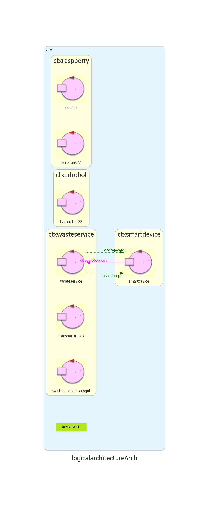

Architettura logica precedente:
{kind=link}
Focus Sprint-1
Nello Sprint-1 si vedrà dunque un focus sui seguenti componenti e sui loro modelli.
 Sprint-0: SmartDevice.qak || WasteService.qak || TransportTrolley.qak || BasicRobot22.qak1 - Simulazione Smart Device
Come da requisiti, lo Smart Device non dovrà essere implementato. Per facilitare la messa appunto dell'applicazione introduciamo un Mock-object, cioè un dispositivo simulato che riproduce il comportamento dei dispositivi reali in modo controllato, in questo caso verrà utilizzato per la simulazione dello Smart Device. Questo meccanismo ci consente di andare a simulare l'interazione tra lo Smart Device e il WasteService, in particolare il primo invierà una DepositRequest e si metterà in attesa di una risposta. Di seguito viene riportata la documentazione relativa ai Mock-object: Mock
2 - Analisi della Core Business Logic
In questa sezione iniziamo con il delineare una prima organizzazione della Logica di Business dei Core Components.
- SmartDevice
- WasteService
- Transport Trolley
- BasicRobot22
Per quanto riguarda lo SmartDevice e il BasicRobot22 sono già stati definiti precedentemente per quello non verranno analizzati.
Macro analisi delle funzionalità:
- Il WasteService prende le richieste dello SmartDevice e in base alla capienza dei Box le accetta o rifiuta.
- Il WasteServcie comunica con il Transport Trolley richiedendo il PickUp dei rifiuti dal camion e lo scarico degli stessi in un determinato tipo di Box, in caso di richieste accettate.
- Il Transport Trolley gestirà le richieste di pickUp del WasteService inviando comandi per muovere il BasicRobot22 per raggiungere le posizioni desiderate.
- Il Transport Trolley prevede l'invio di una conferma di PickUp al WasteService non appena avrà terminato il pickUp.
- Il Transport Trolley deve prevedere la gestione di richieste di scarico mentre sta ancora eseguendo una Deposit Action.
3 - WasteService: Analisi Gestione delle richieste
Dati i messaggi definiti da requisito nello Sprint-0:
Request depositRequest : depositRequest(TYPE, TRUCKLOAD, ...)
Reply loadaccept : loadaccept(...)
Reply loadrejecetd : loadrejecetd(...)
Si evidenziano i seguenti problemi da anlizzare:
- Logica di gestione delle richieste
- Quando rispondere allo SmartDevice
- Possibilità di richieste ripetute
Logica Gestione delle richieste
Il WasteService per poter gestire le richieste che arrivano dallo Smart Device si avvale dell'utilizzo di due variabili inizializzate nello
Sprint0.
Le variabili contGB e contPB, inizializzate nello Sprint0, sono rispettivamente delle variabili contatori per i due tipi di materiali da depositare e verranno verificate
con la capienza massima dei box stabilita a priori tramite i valori di MAXGB e MAXPB.
Pseudo codice di gestione delle richieste:
When (Request depositRequest(TYPE, TRUCKLOAD)){
if(contGB OR contPB + TRUCKLOAD) > MAXGB OR MAXPB{
Reply loadrejecetd
}else{
... //Richiesta di pickUp del materiale al TransportTrolley
}
}
State requestHandling {
...
onMsg(depositRequest : depositRequest(ID, T, L)){
[# Type = payloadArg(0)
TruckLoad = payloadArg(1).toInt() #]
println("Request: ($ID, $Type, $TruckLoad)") color green
if[# Type == "plastic" #]{
if[# (currentPB + TruckLoad) < MAXPB #]{
[# accepted = true #]
}
}if[# Type == "glass" #]{
if[# (currentGB + TruckLoad) < MAXGB #]{
[# accepted = true #]
}
}
}
} Goto requestAccepted if[# accepted == true #] else requestRejected
State requestAccepted {
//Requesting PickUp to TransportTrolley
println("\t $name: Requesting Picking Up...") color green
}
Aggiornamento e gestione delle variabili di stato dei Box
Le variabili currentPB e currentGB vanno aggiornate per la corretta gestione delle richieste.
Siccome il WasteService può ricevere richieste anche prima che la Deposit Action sia stata completata, si evidenzia la seguente soluzione:
- Le variabili
currentPBecurrentGBsaranno aggiornate non appena una richiesta viene accettata. - Si conserverà il valore precedente delle variabili in due ulteriori variabili:
oldPBeoldGB - In caso di conferma di scarico del materiale da parte del TransportTrolley:
oldPBeoldGBsaranno aggiornate acurrentPBecurrentGB - In caso di errori e mancato scarico del materiale le variabili current
In caso si preveda la possibilità di errori nello scarico dei rifiuti, si implementa un meccanismo di transazioni con conferma:
In questo modo il sistema è protetto da eventuali errori nel deposito dei materiali, ma si introducono problemi relativi alla notifica degli errori e ulteriori messaggi di conferma scarico da parte del TransportTrolley.
Siccome il committente non specifica possibilità di errori o malfunzionamenti del robot, si consiglia, in caso di errori e malfunzionamenti di interrompere il funzionamento del sistema, senza la gestione delle variabili in caso di eventuali situazioni di errore.
State requestAccepted {
println("\t $name: Request -$ID- Accepted!") color green
if[# Type == "plastic" #]{
[# currentPB += TruckLoad #]
}
if[# Type == "glass" #]{
[# currentGB += TruckLoad #]
}
} Goto pickingUp
- Non verranno dunque considerate situazioni di gestione di errori dopo l'accettazione di una richiesta
Quando rispondere allo Smart device
Nell'interazione con il committente, come indicato nello SPRINT-0, si è evidenziato come il Waste Truck sarà libero una volta ricevuta una risposta positiva o negativa. In modo da essere liberato il prima possibile.
In caso di loadrejected:
- La risposta viene inviata, come già descritto sopra, non appena ci si accorge che non può essere accolta.
State requestRejected {
replyTo depositRequest with loadrejecetd : loadrejecetd(0)
println("\t $name: Request -$ID- Refused!") color green
} Goto waiting
Nel caso di loadaccepted:
- La risposta deve essere inviata dopo che il TransportTrolley ha terminato il PickUp
State pickupOk {
println("\t $name: Pickup finished! Truck ($ID) can go away!") color green
replyTo depositRequest with loadaccept : loadaccept(0)
} Goto waiting
Richiesta e Conferma di PickUp
La necessità di richiesta e di conferma del pickUp rappresentano un ulteriore Macro Problema, per cui verranno analizzate nel dettaglio nella sezione successiva: Interazione WasteService-TransportTrolley
Richieste multiple
Il WasteService da requisito può ricevere una sola richiesta per Truck, ma può ricevere richieste anche mentre il TransportTrolley sta ancora eseguendo la Deposit Action di un materiale.
Siccome:
- Da requisito, la Deposit Action è gestita dal Transport Trolley
- Il WasteService richiede la Deposit Action al TransportTrolley
- Il WasteService risponde alla request subito dopo il PickUp e rimane libero
La possibilità di ricevere richieste durante l'esecuzione della Deposit Action non influisce sul WasteService ma riguarda il TransportTrolley
Il TransportTrolley deve prevedere l'arrivo e la gestione di ulteriori richieste di PickUp da parte del WasteService durante l'esecuzione di una Deposit Action.4 - Interazione WasteService e TransportTrolley
Come evidenziato nella sezione precedente (Gestione Delle Richieste) vi è la necessità di interazione tra il WasteService ed il TransportTrolley.
Richiesta e Conferma PickUp
Le interazioni necessarie secondo l'analisi della sezione precedente sono:
- Richiesta di PickUp del WasteService al TransportTrolley
- Conferma di PickUp del TransportTrolley al WasteService
Essendo:
- L'interazione composta da una richiesta e una conferma obbligatoria
- Ed essendo il WasteService non implicato in ulteriori operazioni durante l'attesa della risposta
Request pickupReq : pickupReq(...)
Reply pickupOk : pickupOk(...)
Avendo poi delegato l'operazione di Deposit Action al TransportTrolley, questo continuerà la Deposit Action dopo aver scaricato il materiale e aver inviato la PickupOk al WasteServide.
Questo è possibile in quanto la richiesta di scarico dello SmartDevice è stata già approvata e non sono necessarie operazioni intermedie.
Dunque il WasteService sarà libero di gestire ulteriori richieste mentre il TransportTrolley continua nel deposito dei materiali.
Per permettere al TransportTrolley di continuare nell'operazione di Deposito, modelleremo la richiesta con i seguenti parametri:
TYPE: Necessario per indicare al TransportTrolley dove scaricare i materialiID: Per identificare le richieste e rendere più facile la gestione delle stesse in modifiche future
Request pickupReq : pickupReq(ID, TYPE)
Reply pickupOK : pickupOk(ID)
State pickingUp {
//Requesting PickUp to TransportTrolley
println("\t $name: Requesting Picking Up...") color green
request transporttrolley -m pickupReq : pickupReq(ID, Type)
} Transition t1 whenReply pickupOK -> pickupOk
State waiting {
...
} Transition t0 whenRequest pickupReq -> handlePickupReq
State handlePickupReq {
onMsg(pickupReq : pickupReq(ID, TYPE)){
println("\t $name: pickupRequest received!") color blue
}
} Goto pickUp
State pickUp {
//Sending messages to move BasicRobot22 into Indoor
println("\t $name: Going to Indoor!") color blue
...
//Sending pikcup finished
println("\t $name: Pickup Finished!") color blue
replyTo pickupReq with pickupOk : pickuoOk(0) caller== wasteservice
} Goto deposit
Architettura
Interazione completa (in caso di richiesta accettata):
[Attesa Conferma Committente] Conferma deposito (Evoluzine della gestione degli errori in scarico)
Analisi TransportTrolley
Delega Deposit Action
La Deposti Action definita nello Sprint-0 come la sequenza di operazioni:
- PickUp
- Deposit
- Return Home
Come analizzato nella sezione precedente questa viene delegata dal WasteService tramite la richietsa di PickUp.
Passando anche il parametro di TYPE del materiale, in modo che il TransportTrolley, una volta completato il PickUp possa proseguire autonomamente con la Deposit
Vengono quindi instanziate le variabili:
var ID
var MaterialType
ID: per tenere traccia di quale richiesta si sta eseguendoMaterialType: per gestire dove scaricare i rifiuti una volta raccolti
Queste vengono aggiornate ad ogni richiesta pickupReq(ID, TYPE) ricevuta, con i parametri della richiesta:
onMsg(pickupReq : pickupReq(ID, TYPE)){
[#
ID = payloadArg(0)
MaterialType = payloadArg(1)
#]
println("\t $name: pickupRequest received! ($ID, $MaterialType)") color blue
}
La Deposit verrà dunque poi gestita in base al tipo di materiale:
State deposit {
if[# materialType == "plastic" #]{
//Goto PlasticBox
println("\t $name: Going to PlasticBox!") color blue
...
}
if[# materialType == "glass" #]{
//Goto GlassBox
println("\t $name: Going to GlassBox!") color blue
...
}
}
5 - Analisi TransportTrolley
Il TransportTrolley da requisiti si occuperà di muovere e rappresentare come entità Software il Robot fisico DDR.
Analizziamo qui dunque il Macro-Problema della logica di movimento.
- Delega Deposit Action
- Rappresentazione della posizione nella Service Area
- Navigazione
- Astrazione del Movimento per il TransportTrolley
- Richieste Multiple durante l'esecuzione
- Gestione richieste mentre sta scaricando
- Problema gestione richieste in movimento (gestire tornare in dietro oppure no?) Farla gestire dalla prossima posizione utile.
- Problema comandi al DDR Robot Sec-6
Rappresentazione della posizione nella Service Area
Analizzando la problematica le soluzioni indivudate sono 2:
- Rappresentazione tramite Coordinate
- Rappresentazione delle sole posizioni salienti: Home, Indoor, PlasticBox, GlassBox.
Vantaggi dell'utilizzo di un sistema basato su coordinate:
Un sistema basato su coordinate prevede la divisione di tutta la service Area in una matrice con celle di dimensione RD, ovvero la dimensione del robot.
Il Robot dovrà quindi eseguire spostamenti di grandezza RD denominabili Step.
Così facendo la posizine del Robot sarà individuabile in ogni momento come coppia ordinata di numeri. ()
pos = (x,y)
Vantaggi:
- Maggiore flessibilità: Un sistema basato su coordinate offre maggiore flessibilità nel gestire la posizione dei siti. Ad esempio, può adattarsi facilmente se i siti non sono più posizionati agli angoli, se il robot deve seguire un percorso ottimale o se ci sono ostacoli nell'area di servizio.
- Potenziale riutilizzo di moduli esistenti: Utilizzando un sistema basato su coordinate, è possibile sfruttare moduli sviluppati precedentemente come mapper e planner, evitando la necessità di sviluppare nuove soluzioni da zero.
Vantaggi dell'utilizzo di un sistema senza coordinate:
La disposizione specifica delle zone salienti e la presenza di un sonar on-board sul robot, permettono la realizzazione senza l'uso di coordinate.
Il robot può spostarsi all'interno dell'area di servizio lungo le pareti, utilizzando la rilevazione delle collisioni con le pareti per orientarsi.
- Minor complessità e costo inferiore: L'assenza di un sistema basato su coordinate semplifica il design complessivo e riduce i costi associati all'implementazione.
- Maggiore velocità di spostamento e reattività: Senza la necessità di completare passi specifici, un sistema senza coordinate consente movimenti più rapidi e una maggiore reattività ai comandi di arresto durante il movimento in avanti.
- I robot reali potrebbero beneficiare di un sistema senza coordinate, in quanto non richiede l'uso di sistemi di feedback o hardware aggiuntivo per controllare i propri spostamenti in modo più preciso. A differenza di una soluzione basata su coordinate, un sistema basato sulla rilevazione di contatti con le pareti non è soggetto all'accumulo di errori ad ogni passo.
Assunto che: (dallo Sprint-0)
- Il committente non specifica un particolare tipo di rappresentazioni delle posizioni
- Il Robot si muoverà solo sul perimetro della stanza
- La Service Area non contiene ulteriori ostacoli
Si mappa dunque la posizione tramite le posizioni salienti:
Enum Position = {Indoor, PlasticBox, GlassBox, Home}
Logica di Navigazione
Data la scelta di adottare un sistema senza coordinate, nasce il problema della navigazione del Robot tra le 4 posizioni salienti.
Visti i percorsi effettuabili nello Sprint-0
Considerando le posizioni ordinate in senso antiorario: Home, Indoor, PlasticBox, GlassBox.
L'implementazione per la navigazione ordinata tra queste avverà con la seguente logica:
- Il robot si muove in avanti finché non rileva il muro
- Il robot si ruota di 90° verso sinistra
- Ripetere per la prossima posizione saliente
Questo ci permette di visitare in ordine le posizioni Home, Indoor, PlasticBox, GlassBox.
Astrazione della navigazione per il TransportTrolley
Date le scelte sulla rappresentazione delle posizioni, il TransportTrolley navigherà solo sulla base delle 4 psizioni salienti:
Presentiamo varie soluzioni:
- Il TransportTrolley implementerà la logica di moviemento tra le 4 posizioni
- Il TransportTrolley astrarrà dall'implementazione dei percorsi
Per una più corretta progettazione e implementazione del codice decidiamo di astrarre il componente TransportTrolley dalla logica implementativa della navigazione.
Il TransportTrolley si occuperà dunque solo di:
- Conoscere la posizione in cui si trova
- Indicare la posizione da raggiungere
Per fare ciò si introducono due messaggi che il TransportTrolley invierà con semantica Request/Response:
Request move : move(CurrentPos, NewPos)
Reply moveDone : moveDone(NewPos)
Che enalizzeremo nella Macro-Sezione Successiva. 
Problema richieste multiple :
Come da requisiti il TransportTrolley può ricevere più richieste durante l'esecuzione della depositAction. Le richieste possono arrivare in due momenti, quando il DDR Robot è in movimento o quando sta effettuando l'operazione di deposito in uno dei due box. Non essendoci vincoli da requisiti, la scelta progettuale che ci è parsa più conveniente è quella di far arrivare il DDR Robot alla prossima posizione anche se quest'ultimo riceve richieste mentre è in movimento. Andiamo ora ad analizzare due possibili soluzioni per poter gestire richieste multiple.
Soluzione 1: girare indietro
La prima soluzione da noi proposta è quella di far percorrere il percorso alla rovescia al DDR Robot, ossia di far girare quest'ultimo di 180°. Questa soluzione risulta ottimale nel momento in cui il DDR Robot si trova più vicino alla posizione di Indoor rispetto che alla posizione di Home.
Soluzione 2: passare per la Home
La seconda soluzione da noi proposta prevede invece di far completare l'intero percorso al DDR Robot al di là delle richieste multiple o della singola richiesta. Attuando questo tipo di soluzione il DDR Robot farà sempre lo stesso percorso, ossia Home->Indoor->PlasticBox->GlassBox->Home.
La scelta tra una soluzione e l'altra non influisce sull'architettura del sistema per le scelte progettuali effettuate, quindi possono essere implementate entrambe configurandole a livello applicativo.6 - Interazione TT e BasicRobot22
Il TransportTrolley si occuperà di far muovere il robot per il carico/scarico dei rifiuti. Per la messa in azione del robot è possibile riutilizzare il software già sviluppato per eseguire il path trovato (unibo.pathexecutor) e quindi il TransportTrolley incaricherà il robot del percorso da compiere mediante il riutilizzo di questo software. Il TransportTrolley è a conoscenza della posizione iniziale e della destinazione del BasicRobot e manda una Request ad un nuovo componente customizzato CustomPathExecutor e quest'ultimo si occuperà di far arrivare il BasicRobot a destinazione mediante l'invio di messaggi seguendo la logica di spostamento sul perimetro e gestendo le collisioni con le pareti. Il CustomPathExecutor sarà in grado di comunicare tramite una Reply al TransportTrolley quando il BasicRobot arriva a destinazione. Come già anticipato,andrà aggiunto questo nuovo componente custom nel contesto ctxwasteservice che fa da tramite per l'interazione tra TransportTrolley e BasicRobot e l'architettura risulterà come segue:
Modello Eseguibile
- Componenti
- Interfacce (Messaggi scambiati)
- Modello Eseguibile QAK
Riassunto situazione attuale:
Architettura logica:
{kind=link}
QAK
Modello del sistema QAKPrimo metamodello QAK wasteservice (= a sprint0)
Primo metamodello QAK transporttrolley